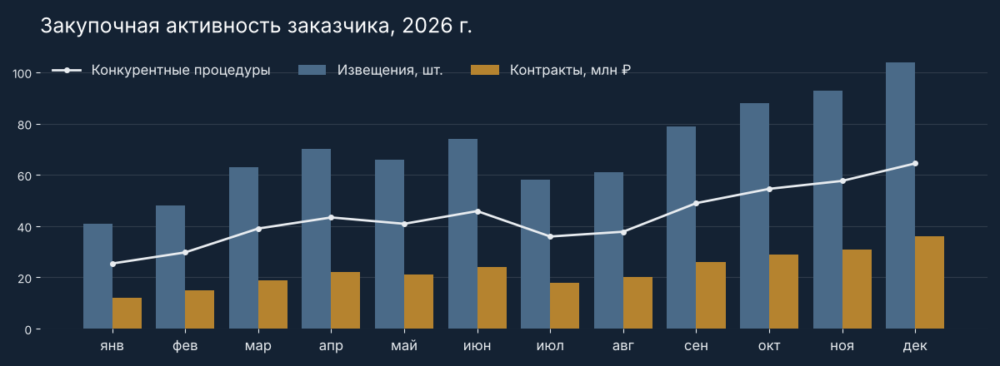

Рабочий стол заказчика
Страница-полигон для измерения метрик производительности рендеринга, интерактивности и ресурсной стоимости интерфейса информационной системы сопровождения государственных закупок.
Заказчик размещает извещения о закупках, принимает и рассматривает заявки участников, подводит итоги и заключает контракты. На полигоне собраны типовые элементы рабочих экранов: карточки закупокКарточка показывает номер извещения, предмет закупки, НМЦК и срок окончания подачи заявок., доска рассмотрения заявок с перетаскиванием, карусель лотов со свайпом и прокручиваемый реестр извещений. Наведите курсор на подчёркнутые термины — например, НМЦКНачальная (максимальная) цена контракта — предельная цена, с которой начинается закупка..

Активные закупки
Рассмотрение заявок (перетаскивание)
Перетащите заявку мышью или пальцем в нужную колонку.
Лоты закупки (свайп)
Искусственная длинная задача
Не запускалась
Реестр извещений (прокручиваемая область)
| № извещения | Предмет закупки | Способ | НМЦК, ₽ | Окончание подачи |
|---|